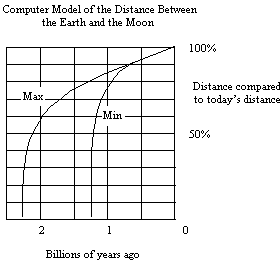
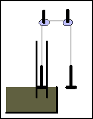
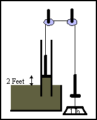
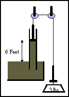

| Feature Article - November 1997 |
| by Do-While Jones |
 |
One of the first things NASA did when the Apollo 11 astronauts
reached the Moon was to set up a laser reflector that would allow
scientists on Earth to measure the distance from the Earth to
the Moon. Over the 12-year period from 1969 to 1981, scientists
kept track of the distance to the Moon and found it to be increasing
approximately 4 cm per year.1
This allows us to build a computer
model that calculates how close the Moon would have been to the
Earth in the past. The output from that model is shown in the
graph.
We will explain how the model obtained these results shortly. The important point to note is that the model shows that the Moon could not have been orbiting the Earth for more than 2.3 billion years. This poses a serious problem for the evolutionists' time scale. |
Although the model puts a maximum limit on the age of the Moon (and the Earth, if one believes that the Earth and Moon were formed at the same time), it does not tell how old the Moon is. It only models the process by which the Moon loses energy to the tides on Earth, and the effect of that energy loss on the Moon's orbit. It does not model the process by which the Moon gained the energy to get into orbit in the first place.
Some scientists believe that the Moon was formed when gravity pulled space dust together into a ball. Some scientists believe that the Moon was formed when a comet or asteroid smashed into the Earth, splashing molten rock into orbit. Some scientists believe that the Moon was wandering aimlessly through space when it got caught in the Earth's gravity and started orbiting the planet. Some scientists believe God created the Moon and placed it in orbit. No scientists believe that today's tidal forces put the Moon in orbit.
But regardless of how the Moon got into orbit, scientists do believe that the Moon is responsible for tides on the Earth. They believe that the Moon loses energy to the tides. Scientists believe that because the Moon is losing energy, it is moving farther from the Earth. There are scientific observations that back up all these beliefs. We can use these observations and physical laws to compute how far the Moon would have been from the Earth at various times in the past, assuming that it was in orbit then.
The model shows that 60 million years ago, the distance between the Earth and the Moon would have been 99.4% of what it is now. For ages older than 1 billion years, the uncertainty in the model increases, but about 2 billion years ago, the Moon would have been 24,000 miles away from the Earth, orbiting the Earth 3.7 times per day, causing tides 1 million times higher than those we see today.
Of course, these estimates of the distance between the Earth and the Moon depend upon the accuracy of the computer model. Let's look at the physics behind the model and see how it works.
Many people are surprised that the Moon is falling away from the Earth. They quite naturally expect that gravity would pull the Moon down to Earth. But the measurements of the distance to the Moon are not controversial. Nobody disputes that the Moon is escaping from the Earth. Even before Apollo 11, radar measurements showed that the Moon was getting farther away from the Earth. The Apollo 11 laser experiment just improved the accuracy of the measurement.
There is a good physical explanation that describes why the Moon falls away from the Earth. As the Moon orbits the Earth, it causes the ebb and flow of the tides. It requires work on the part of the Moon to lift the water to create a high tide. Most of this work is wasted because man fails to take advantage of it, except in Holland where there are some tide-driven hydroelectric plants.2 Man's failure to take good advantage of this work does not diminish the fact that the Moon is doing the work and must therefore be losing energy. (If the Moon could do work without losing energy, then we could use it to build a perpetual motion machine, which is impossible.)
Does the Moon know it is doing work? Does it feel the strain? Yes, it does. As the Moon pulls the water up on the shore, the water feels a force that is mostly upward, with a slight tangential component. The Moon feels an equal and opposite reaction. The small tangential component of the reactive force tends to slow down the Moon slightly, reducing its kinetic energy. That's how the Moon loses energy by doing work on the oceans of the world.
So, the Moon is losing energy and slowing down. That is logical and understandable. But why does it fall up? Intuitively it might seem that as the Moon loses energy it should fall back to the Earth. Intuition, it turns out, is wrong in this case. When the Moon loses energy it falls away from the Earth.
You can convince yourself of this by doing a simple experiment. Tie a small weight to one end of a string about a foot or two long. Pass the other end of the string through the hole in the center of a spool and tie a washer to it. Swing the weight around above your head. While it is still spinning, pull the washer down about 6 inches. The weight will start spinning faster. Let go of the washer and the washer will snap up to the spool, and the weight will return to its previous, slower speed.
When you pulled down on the washer, you did "work" because you used force to move an object (the washer) along a certain distance (6 inches). The work you did was stored in the form of increased kinetic energy in the rotating weight. That's why it went faster. When you let go of the washer, the weight did work by lifting the washer. The swinging weight lost kinetic energy when it lifted the washer, and slowed down. The larger orbit, with the lower velocity, is the lower energy state.
There is another principle at work here--the conservation of angular momentum. You no doubt have watched a figure skater perform. She starts to spin, then pulls her arms close to her body and spins faster. When she spreads her arms out, she slows down. That's because the angular momentum (the product of the velocity of all the masses in her body times the distance from the center of rotation) must remain constant. When you increase the radius, either the mass or velocity must decrease. Since Jenny Craig hasn't discovered a way for a person to lose weight merely by spinning, the skater's velocity must decrease.
If you still aren't convinced, remember that the skater has to exert some effort to keep her arms close to her body. If she relaxes, her arms will naturally fly out to the lower-energy state.
For the Moon to lose kinetic energy, it must slow down. For it to slow down and maintain the same angular momentum, it must move farther away. That's why the Moon falls up.
Since the Moon falls up, why did Sputnik 1 fall back down to Earth after 57 days in orbit? Why didn't its radius keep increasing like the Moon's does? Because small, near-earth satellites are controlled by different forces.
Sputnik 1 was only 185 pounds. If you suspend a 185-pound weight over your bathtub and swing the weight back and forth, it won't create a measurable tidal effect even a few feet above the bathtub. There is even less effect when the object is 141 to 588 miles away, as Sputnik initially was. Therefore, Sputnik was not doing any work on the oceans of the world, and was not losing energy to them the way the Moon does.
Sputnik did lose energy as it collided with gas molecules a few hundred miles away from the Earth. As it collided with the molecules it lost angular momentum to them. By the law of conservation of momentum, Sputnik lost the same amount of momentum as it gave to the gas molecules. Therefore, Sputnik's orbit decreased as a result of its decreased angular momentum.
Just as the Moon loses kinetic energy as it moves away, Sputnik gained kinetic energy as it got closer to the Earth. The Earth did work on Sputnik as the Earth brought Sputnik closer. But the closer Sputnik got to the Earth, the more gas molecules it collided with. Sputnik kept losing energy and momentum to these gas molecules as it spiraled in toward the Earth, until it was imparting so much energy to the surrounding gas that the gas got hot enough to burn Sputnik up.
Today, the Moon is pumping about 254 billion watts into the world's oceans. No wonder it is getting tired and slowing down! When it was closer, it did even more work faster. As the distance between the Earth and the Moon decreases, the force of the Moon's pull on the water gets stronger, and the Moon circles the Earth more often, doing more cycles of greater work per year. That's why the graph on the front page bends so sharply.
Most of the physics and math are straight-forward. There are a couple places where things get tricky and difficult to solve exactly, but there is a simple way to bound the solution. That's why the graph shows two lines. One line uses the minimum conditions. The other uses the maximum conditions.
We know the mass of the Moon.3 We know the current radius of the Moon's orbit4 so we can easily calculate the circumference, which tells how far the Moon goes in one orbit. The Moon completes one orbit every 27.321666 days, so one can divide the circumference of the orbit by the time it takes to make one orbit to determine the Moon's velocity.
Angular momentum is defined to be mass times velocity times the radius, so one can determine the angular momentum of the Moon. Angular momentum remains constant, and the mass of the Moon doesn't change, so one can compute the velocity of the Moon at any radius.
Kinetic energy is half the mass times the velocity squared, so knowing the mass and velocity one can compute the kinetic energy of the Moon.
There are two ways to compute the attractive force between the Earth and Moon. The hard way is to compute the centripetal force by multiplying the universal gravitational constant times the product of the mass of the Earth and the mass of the Moon, and dividing by the separation squared. The easy way is to compute the centrifugal force, which is the mass of the Moon times the Moon's velocity squared divided by the separation. The centripetal force and centrifugal force are equal and opposite forces, so you can compute either one.
The amount of work currently done per year by the Moon is the product of the attractive force times the increase in radius (4 cm). Since the Moon makes 13.37 orbits per year, one can compute the work done per orbit in modern times.
Since it is easy to compute the speed of the Moon for each radius
(keeping angular momentum constant), and since it is easy to compute
the circumference from the radius, one can compute the number
of "months" in a year (that is, the number of orbits
per year).
How to Determine Work From Force
So far, everything has been straight-forward. Here is where the tricky part begins. As the Moon gets farther away from the Earth, the attractive force decreases and the tidal effect decreases. Therefore, the work done per orbit decreases. When the Moon was closer, it did more work per orbit. The question is, "How much more work did it do?"
Engineers have to remember a number of little tidbits of information, including the fact that 1 atmosphere = 14.7 psi = 30 inches of mercury = 33 feet of water. That is, a rectangle of water 1 inch by 1 inch by 33 feet high weighs 14.7 pounds. Therefore, a column of water 2.2 feet high weighs one pound per square inch. To make the illustration easier to follow, let's pretend that a two foot column of water weighs one pound.



In this series of three diagrams we see a simple pump made by connecting a piston in a pipe to a rope that passes over two pulleys to an identical piston used as a counter-weight. If we tie a one-pound weight to the right piston it will pull the left piston up two feet. The work done is two foot-pounds. If we tie a three-pound weight to the right piston, it will raise the left piston six feet, doing 18 foot-pounds of work. The work done is proportional to the force squared.
So, knowing the attractive force between the Earth and the Moon at various radii, we can compute the work done per orbit at each of those radii. Knowing the number of orbits per year, we can compute the work done per year.
The table shows the velocity, number of orbits per year, attractive force, energy of the Moon, and the rate at which it is losing energy, for various radii.
| Radius | Orbits/year | Force(nt) | Energy(joules) | Power loss (watts) |
|---|---|---|---|---|
| 0.1 | 1336.85 | 2.00E+23 | 3.85E+30 | -2.54E+19 |
| 0.2 | 334.21 | 2.50E+22 | 9.61E+29 | -9.91E+16 |
| 0.3 | 148.54 | 7.41E+21 | 4.27E+29 | -3.87E+15 |
| 0.4 | 83.55 | 3.13E+21 | 2.40E+29 | -3.87E+14 |
| 0.5 | 53.47 | 1.60E+21 | 1.54E+29 | -6.49E+13 |
| 0.6 | 37.13 | 9.26E+20 | 1.07E+29 | -1.51E+13 |
| 0.7 | 27.28 | 5.83E+20 | 7.85E+28 | -4.40E+12 |
| 0.8 | 20.89 | 3.91E+20 | 6.01E+28 | -1.51E+12 |
| 0.9 | 16.50 | 2.74E+20 | 4.75E+28 | -5.89E+11 |
| 1.0 | 13.37 | 2.00E+20 | 3.85E+28 | -2.54E+11 |
We can easily compute that the kinetic energy of the Moon at its current distance is 3.85 x 1028 joules, and that its kinetic energy at 95% of its current distance was 4.26 x 1028 joules. Furthermore, we know that the Moon is losing 8.00 x 1018 joules per year, and was losing 12.06 x 1018 joules per year when the distance was 95% of what it is today. How long did it take to lose 0.41 x 1028 joules?
That's a difficult question to answer because the rate it loses energy changes with time. The solution involves such a nasty integral that I'm not sure I could compute it correctly. But it is easy to bound the answer. We know that the average loss is more than 8.00 x 1018 joules per year and less than 12.06 x 1018 joules per year. So, we know that it took more than 0.41 x 1028 / 12.06 x 1018 and less than 0.41 x 1028 / 8.00 x 1018 years. In other words, it would take between 340 and 512 million years for the Moon to increase its radius from 95% of its present value to 100% of its present value.
The computer model used to generate the graph determined the minimum and maximum times it would take to lose the energy going from one distance to another and plotted the cumulative results.
What can we learn from all this? First we can see that the evolutionists' maxim, "The present is the key to the past," isn't always true. The present process by which the Moon is losing energy certainly isn't the process by which it obtained the energy to get into orbit in the first place. This could lead us to wonder if perhaps the present process that is driving so many species to extinction, that is, survival of the fittest, is not the process that created all those species in the past.
The Moon could not always have been uniformly losing energy to the Earth's oceans. There must have been some special event in the past that put the Moon into orbit. We can't tell exactly when that event happened, or what that event was. We can tell, however, that that event could not have happened more than 2.2 billion years ago. If it had happened more than 2.2 billion years ago, the Moon would have lost so much energy by now that it would be farther away than it is now.
Whatever that non-uniform event was, it also caused the Moon to rotate once every 27.321666 days. Since the Moon has no atmosphere or oceans to slow down its rotation, it is reasonable to believe that the rotation of the Moon about its axis has not changed since it was created (by whatever process). If the Moon was created, say 500 million years ago, at a distance about 94% of today's distance, orbiting the Earth once every 24 days but rotating on its axis once every 27.321666 days, wouldn't it be an amazing coincidence that when creatures finally evolved enough to notice, that the Moon would have lost enough energy so that the rotation of the Moon around the Earth would just happen to exactly equal the time it takes the Moon to rotate on its axis? What are the odds of that happening? Aren't we lucky to be living now?
Actually, isn't it much more reasonable that the present process by which the Moon has been losing energy has only been going on for a few thousand years? Isn't it reasonable to assume that whatever process put the Moon in orbit also formed the Earth at the same time? If the Earth and Moon were formed recently, then there hasn't been time for life to evolve on Earth.
| Read the reaction to this article, how dark matter could explain it, a follow-up essay, and more most recently revised essay. |
| Quick links to | |
|---|---|
| Science Against Evolution Home Page |
Back issues of Disclosure (our newsletter) |
| Web Site of the Month |
Topical Index |
Footnotes:
1 "Moon Slipping
Away from Earth", Geo, Vol.3 (July 1981) p. 137
2 The Dutch don't have much choice. They certainly can't obtain
hydroelectric power from the swiftly flowing rivers cascading
down from the Dutch Alps.
3 The mass of the Moon is 7.34712 x 1022 kilograms.
4 The average distance between the Earth and Moon is 238,857 miles.